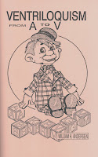

From A-V
3/7/2009
If it has anything to do with the ventriloquist or the art of ventriloquism, it is probably discussed in this best selling book by William H. Andersen. Professional secrets and advice gleaned from a lifetime of experience as well as many interviews with active professional ventriloquist entertainers. 33 subjects, with topics arranged alphabetically - everything "from A-V
Check out this list of contents: A Basic Course, Dummy, Education, Entertainment, Figures, Grammar, Habits (Behavior), Habits (Clothing), Impromptu Ventriloquism, Jokes, Kindness, Lighting, Manipulation, Muffled Voice, Novelty, Old Man/Woman Figures, Polyphonism, Practice, Pasture, Publicity, Quench a dry throat, Routines, Religious Ventriloquism, Remuneration (How to charge), Speech, Style, Showmanship, Timing, Uses of Ventriloquism, Ventriloquist - All in a single 60 page book...A-V!
Just one of more than two dozen books I have listed for eBay auction ending Monday am. See them all Here.
{kind=link}

"!Check out this list of contents: A Basic Course, Dummy, Education, Entertainment, Figures, Grammar, Habits (Behavior), Habits (Clothing), Impromptu Ventriloquism, Jokes, Kindness, Lighting, Manipulation, Muffled Voice, Novelty, Old Man/Woman Figures, Polyphonism, Practice, Pasture, Publicity, Quench a dry throat, Routines, Religious Ventriloquism, Remuneration (How to charge), Speech, Style, Showmanship, Timing, Uses of Ventriloquism, Ventriloquist - All in a single 60 page book...A-V!
Just one of more than two dozen books I have listed for eBay auction ending Monday am. See them all Here.